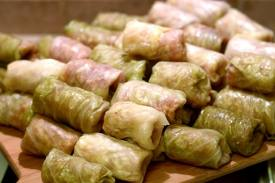

Some traditional romanian food
Sarmale

Ingredients
- 1 kg chopped pork meat
- 2 onions
- parsley
- 200 grams rice
- 2 spoons tomato sauce
- 1 cabbage
- salt,pepper,chili
Preparation method
- Mix the chopped meat with the rice , chopped onion , parsley , tomato sauce ,
salt and pepper.
- Take 1 cabbage leaf at a time and fill it with the mixture above.
Mamaliga cu branza
Ingredients
- 350 g corn flour
- 1 spoon of butter
- 250 g cheese
- 2 spoons of cream
- salt
Preparation method
- Heat the oven at 150 degrees Celsius.
- Mix the corn flour with the butter , some water and a bit of salt.
- Add 1 layer of composition and then sprinkle some cheese on top of it.
- Add another layer and sprinkle some cheese again.
- Put in into the oven for 8-12 mins.